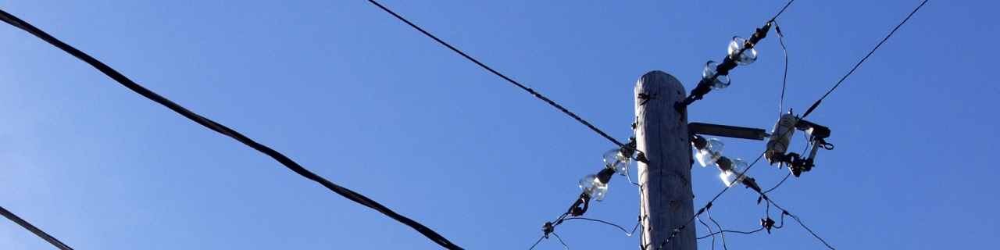

Gridhound
The low-cost grid monitoring solution as a service
Our solution provides a cloud-based data-driven monitoring service for power
distribution systems. Using a new monitoring idea that we have
developed and is in the process of being filed as a patent, we can perform
this monitoring task with very few measurements, no need for system model,
and with very low computational cost.
Using such a monitoring service, any power distribution system operators
(DSOs) can obtain an understanding of the ongoing situation in their
networks (compared to the actual situation in which there is almost no data
in real-time). This allows the violation detection of system operating
limits in real-time and therefore, enables a much
safer and more efficient system operation. Considering the impacts of the ever-increasing
penetration of distributed generation units such as photovoltaic units on
distribution systems, our service would be highly valuable in order
to integrate higher volumes of renewable generation at the distribution
level and also make better decision about the required upgrades in the
systems.
More information will come soon.
Gridhound UG (haftungsbeschränkt) - in Gründung -
info[at]gridhound.de - Schleckheimer Str. 201 - D-52076 Aachen
Gesellschafter:
Prof. Dr. Andrea Benigni - Artur Löwen - M.Sc. Mohsen Ferdowsi - M.Sc. Padraic
McKeever - Prof. Dr. Antonello Monti
Geschäftsführer: Artur Löwen - M.Sc. Mohsen Ferdowsi - M.Sc. Padraic McKeever